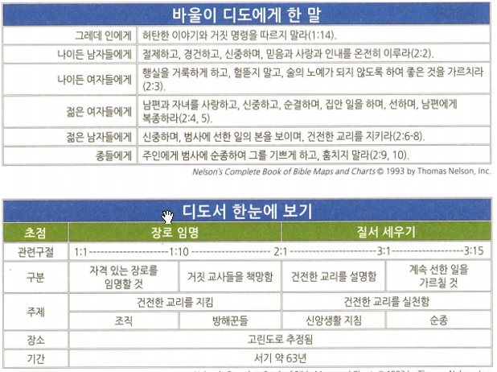

<!doctype html>
<html>
    <head>
        <meta charset="UTF-8">
        <meta name = "viewport" content = "width = device-width, initial-scale=1.0">
        <title>CF1 디모데 전후서/디도서</title>
        <link rel="stylesheet" type="text/css" href="../../../css/pages.css">
    </head>
</html>

<body>
    <header>
        <h3><a href = "../../../index.html">HAGUS <br> HARDWARE</a></h3> 
        <ul id="main_menu">
        </ul>

        <script src = "../../../MainMenu.js"></script>
    </header>

    <section class="section">
    <div id = "tag_menu">
    </div>

    <script src = "../../../TIL_tag_menu.js"></script>

    <div id = "tag_list">
        <div class="l_title"><a href = "../../../TIL.html">Class.</a></div><hr>
        <div class = "l_subtitle"><div class = "title"><a href = "../../../TIL.html"><strong>[CF1] 디모데전후서/디도서</div><div id="date">2021.06.12</div></strong></a></div>
             <!--====content====-->
        <div class = "content"> 
<pre>
<strong>목회서신</strong>
디모데전서: 흔들리는 교회를 안정되게
디모데후서: 복음과 함께 고난을 받으라


<span class = "h">개괄</span>
<strong>저자</strong> : 로마에서 석방된 후 바울
<strong>연대</strong> : 디모데 전서 62년 & 후서 64년 경 
<strong>장소</strong> : 마게도냐(디모데 전서) 로마(디모데후서).
<strong>수신</strong> : 에베소 교회(디모데전후서), 그레데(디도서)
<strong>상황</strong> : 사도들이 파견한 사자들이 교회에서 발생한 문제들을 어떻게 처리할 것인지에 대한 지침
<strong>목적</strong> : 디모데와 디도가 사도의 대사 역할을 하도록 준비시킴
<strong>주제</strong> : 후사도시대(postapostolic period)의 교회 세우기
<strong>핵심 구절</strong>
(4:1-2) 하나님 앞과 살아 있는 자와 죽은 자를 심판하실 그리스도 예수 앞에서 그가 나타나실 것과 그의 나라를 두고 엄히 명하노니, 너는 말씀을 전파하라 때를 얻든지 못 얻든지 항상 힘쓰라 범사에 오래 참음과 가르침으로 경책하며 경계하며 권하라


<span class="h">디모데 전후서 핵심 이슈</span>
<strong>디모데전서의 이슈</strong>
1. 거짓 교사들의 출현

<strong>디모데후서의 이슈(두번째 수감 당시 서신)</strong>
1. 지도자의 자질 : 신앙전통의 전수와 가르침
2. 성경공부와 성경교육의 중요성(딤후3:17)


<span class="h">디도서</span>



</pre>  
    <br>
    <br>
    <br>
    </div> 

    </div>

</section>

    
</body>


